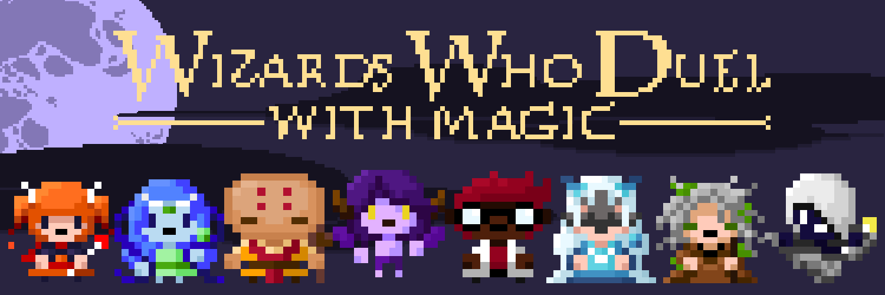

Overview
“Wizards Who Duel: With Magic” is Black Cherry Games’ first project. Our goal with this project is to create something fresh by adding a twist to a common game style – bullet hells. Wizards Who Duel takes the original idea of a bullet hell, but allows you to play against others and create a new, dynamic experience with each game. Like other fighting games that came before it, Wizards Who Duel adopts a traditional style of game progression including, but not limited to: several rounds per game, multiple maps to choose from, player health bars, and of course, the eventual, indisputable victor. However, if that was all there was to it, Wizards Who Duel would be just the same as its predecessors, which is definitely not the case. With a selection of eight unique fighters, each equipped with their own skillsets and abilities, Wizards Who Duel focuses on dodging unpredictable attacks and countering the abilities of different fighters, rather than simply memorizing combo strings predesignated at the start of each level. Enjoy the adrenaline of fierce competition with the addition of weaving through hordes of projectiles in the unique player-versus-player bullet hell, “Wizards Who Duel: With Magic”. Will you emerge unscathed?
Meet the Characters
Learn to fight as and against eight unique fighters. Each fighter is themed around one of the four core elements: fire, water, earth, and air. With all eight fighters having different abilities, each game is full of endless possibilities.